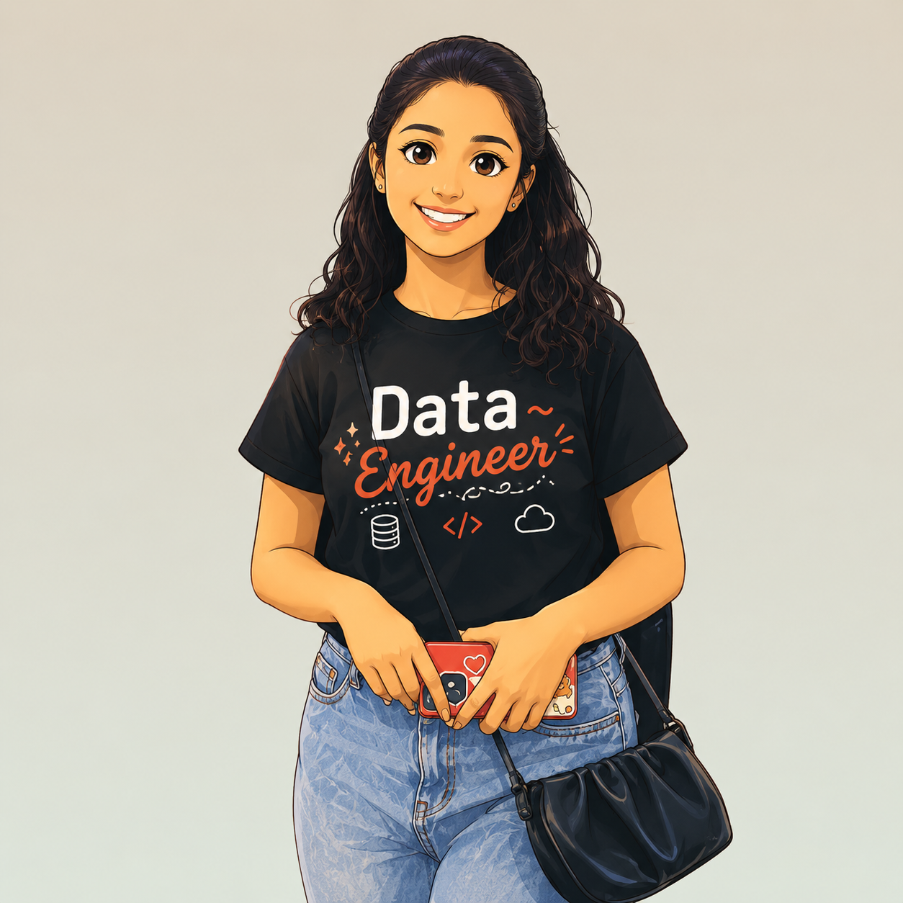

Data Platforms
- Microsoft Fabric
- OneLake
- Lakehouse
- Warehouse
- Azure Data Factory
- Azure Synapse
- Databricks
👋 Hello, I'm
Microsoft-certified Data Engineer with 3+ years of experience designing scalable data platforms on Microsoft Fabric, Azure, Databricks and crafting executive-grade dashboards that turn raw data into million-dollar insights.

✨I'm a Microsoft-certified Data Engineer & Analyst who lives at the intersection of clean architecture and beautiful storytelling. For the past three years, I've been building end-to-end data platforms — from Lakehouse foundations on Microsoft Fabric to executive dashboards that surface seven-figure cost-optimization opportunities.
My happy place is the moment messy, sprawling data finally clicks into a star schema and tells a leadership team something they couldn't see before. I've architected solutions for US logistics, finance, and operations clients, owned data ingestion across five business domains, and mentored 100+ engineers as a Microsoft Fabric trainer.
When I'm not modeling fact tables or tuning PySpark notebooks, you'll probably find me obsessing over a Power BI colour palette. ✨
A curated stack honed across logistics, finance, and operations engagements.
From Associate Engineer to subject-matter expert in Microsoft Fabric.
Kanerika Software Pvt. Ltd.
Data Engineering · Microsoft Fabric, Power BI, PySpark
Kanerika Software Pvt. Ltd.
Data Engineering · Microsoft Fabric, Power BI, PostgreSQL, ETL Notebooks
Validated expertise across the Microsoft data stack.
Microsoft Certified
Microsoft Certified
Microsoft Certified
Databricks Certified
Microsoft Certified
9th Annual Day · Kanerika
MBM University, Jodhpur
Always happy to chat about Microsoft Fabric, data architecture, or your next dashboard.